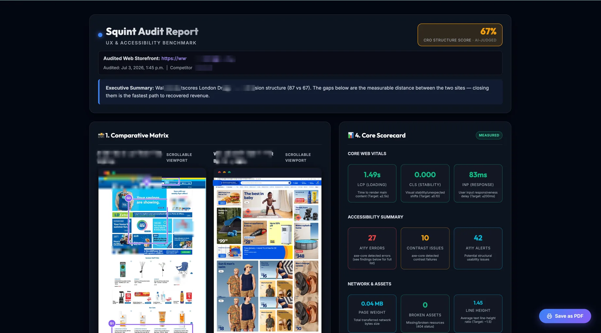

An audit-driven pitch generator for agencies: it turns a website audit into a client-winning, competitor-benchmarked report in under two minutes.
Live and in daily internal use. Discovery reframed a crowded dev QA tool into a pitch generator for agencies: a website audit in, a competitor-benchmarked, client-ready report out in under two minutes. Next milestone is the hosted web app.

Every agency, CRO consultant, and freelancer faces the same cold-outreach problem. Manual audits take 4–8 hours per prospect. Nobody does them at outreach scale, so cold emails stay generic and convert below 1%. Individual site owners have the opposite problem: they know their site underperforms but can't articulate why, and can't afford a $5K agency audit to find out.
CRO shops, web design agencies, freelance UX consultants (1–50 seats). JTBD: "Make my cold outreach impossible to ignore, and justify my retainer."
E-commerce owners, indie founders. JTBD: "How bad is my site really, and what do I fix first?"
Squint originally shipped as a developer accessibility/QA extension: a crowded, free, commoditized space. I repositioned it around the actual asset: the persuasive, branded report that wins business, not the diagnostics that produce it. From there I defined the two-segment growth loop, wrote the capability ladder toward a defensible product, and built the audit pipeline (competitor discovery, capture, telemetry harvest, and AI critique) end to end.
Gemini identifies the prospect's strongest direct competitor from page metadata, with manual override and preset benchmarks.
Server-side stealth Puppeteer with splash-screen detection, backed by an in-browser scroll-and-stitch fallback.
axe-core accessibility, Core Web Vitals, page weight, tracker/pixel detection, tech-stack fingerprinting, contrast inspection.
Screenshots + DOM + metrics produce a UX alignment score, executive summary, and CRO recommendations, delivered as a dark-themed PDF and interactive HTML report.
The full audit-to-pitch loop (competitor discovery, capture, telemetry, AI critique, branded delivery) is built, live, and in daily internal use as a Chrome extension + local backend. The repositioning from "dev QA tool" to "pitch generator" reframed the entire go-to-market. The next milestone is the hosted web app that removes the extension/localhost barrier standing between agencies and the product.
Hosted, zero-friction web app: paste a URL, get a report in under 90 seconds. No extension, no keys.
Evidence-grade claims pinned to annotated screenshots, plus an AI "after" mockup: the launch-moment differentiator.
Proprietary benchmark corpus: percentile claims that compound with every audit run.
Want a discovery sprint or a prototype like this one for your product? Book a call.